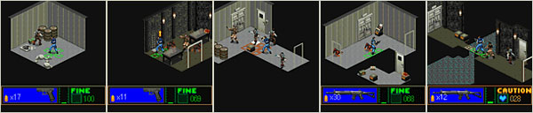
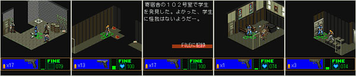
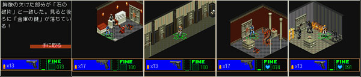
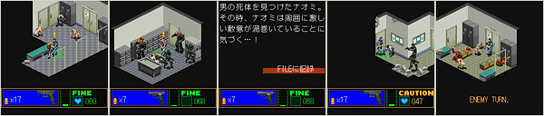

|
手機遊戲-----惡靈古堡～機密報告
|
|
費用：月額300日圓（未稅） 服務系統：au、Vodafone 以生存對策為主軸的遊戲，使用限定的武器來解除難關。 Chapter1：因為所內設施的爆炸事件，無端捲入一名FBI的菜鳥女性搜查官，兩人一起面臨當下的命運......
 執行一次攻擊、迴轉、移動、待機即為一次行動，畫面下方藍色心型是「心拍計」，表示角色的興奮度， 興奮度越高被敵人發現的機率也越高，要避免受到僵屍和利卡的攻擊，請保持平靜的心來前進吧。 在被敵人發現之前先發制人，使出「關鍵一擊」來攻擊，如果裝備來福槍之類的強力武器，「關鍵一擊」 的準確率也會確實上升。 Chapter2：在一切成謎的大爆炸發生之後，警官泰拉收到來自廢棄學校的求助訊號，另一方面，FBI的搜 查官娜歐玫同樣收到救助暗號而前往學校......
 警官泰拉‧哈米盧頓：上任第一天，原本想平靜結束任務，沒想到卻發生大爆炸。 FBI搜查官娜歐玫‧馬庫里：為了驗證爆炸的設施是否如傳聞所言在進行秘密實驗，她一腳踏入了這個危 險地帶。 Chapter3：接收到謎樣警告的泰拉前往博物館，一名可疑人物所遺留的小瓶子似乎就是解開謎團的契機， 不料此時卻被武裝部隊給鎖定了......
 快要接近事實真相的兩人，被新的敵人擋住了去路。 Chapter4：和外界的聯繫完全斷絕，警官泰拉決定到研究設施去，而娜歐玫也帶著收集的證據前去會合， 兩個人在調查時發現一間「特別研究室」，在那裡，他們看到了最終研究體......
 |
惡靈深淵Biohazard Abyss http://98.to/coolbio